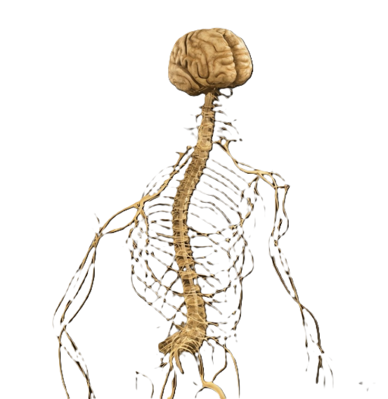
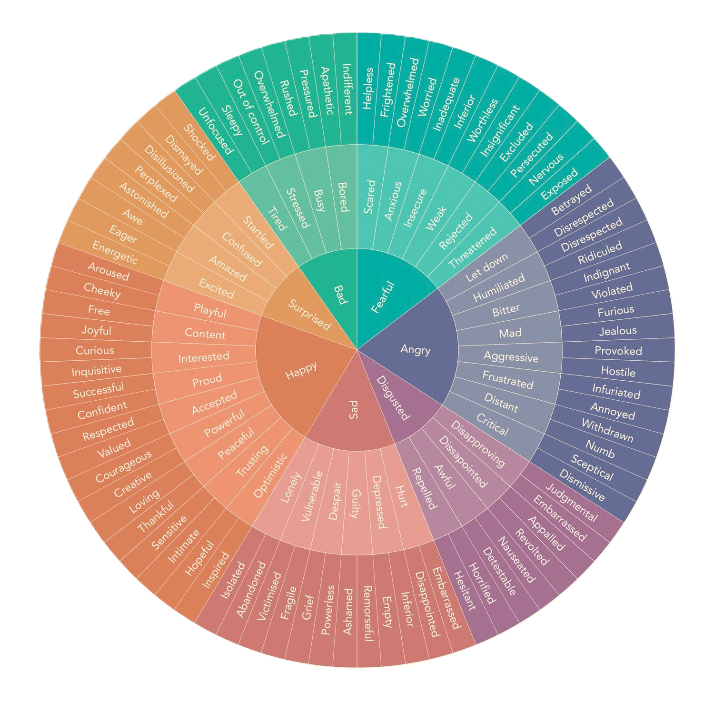
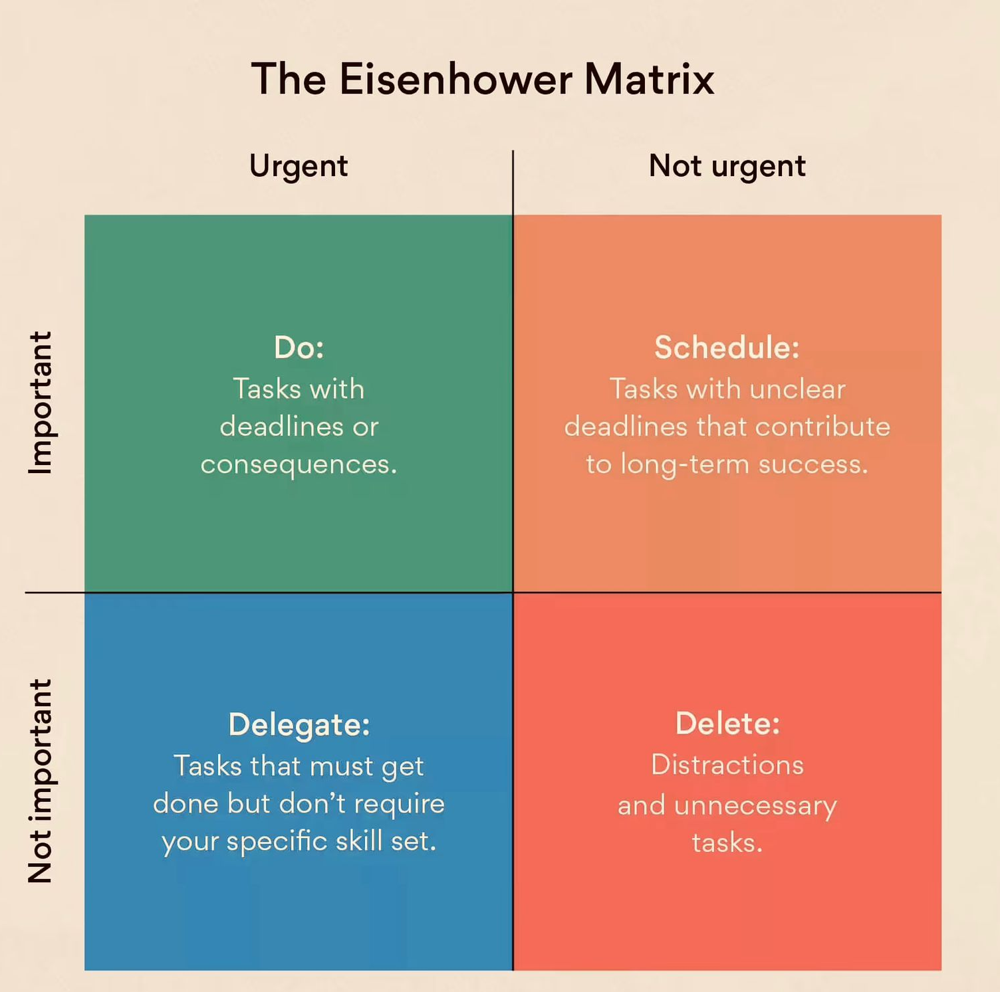

We are here with you today. Not to teach. To explore together.
Thir Collective works at the intersection of psychology, neuroscience, contemplative wisdom and human behaviour, to help people navigate modern life and the chaos it brings.
You will experience Thir today.
There are no wrong answers.
Badge of Busy
Busy is the new default.
Why does doing nothing feel like doing something wrong?
The Guilt of Rest
The problem is earlier.
Is fainting the problem?
No. The problem is that they never stopped.
Now apply that logic to the mind.
The mind cannot faint. So it stops choosing. It just reacts.
What is actually happening, and why.
The body is keeping score.

Most people adapt to this state so gradually, they stop recognising it as a state at all.
These traditions did not borrow from each other. They arrived at the same place.
"Between stimulus and response, there is a space.
In that space is our power to choose our response.
In our response lies our growth and our freedom."
Viktor Frankl
That space is the pause.
Tried, tested. Built on positive psychology and neuroscience.
Workload doubled. Fires everywhere.
He stopped taking initiative.
Started missing deadlines.
On Sunday afternoon, he dreads Monday.
He didn't like this. He wasn't always like this.
I NEED TO GET CLEAR SO THAT I CAN MOVE.
He remembered the Thir Collective workshop.

He was no longer reacting to the feeling. He was responding to the problem.

He kept the paper next to him. So he could finish it. Not just think about it.
Not because the workload disappeared.
Because he stopped reacting and started responding.
This is what Rahao does for you.
Keep the worksheet. Return to it whenever you need it.
You are what you consume. Consume well.
We also offer 1-1 and group sessions.
Raise an inquiry at thircollective.com or DM us on Instagram.
 It helps us grow.
It helps us grow.
Join our community. The practice continues beyond today.
Rahao · ਰਹਾਉ
thircollective.com · @thircollective